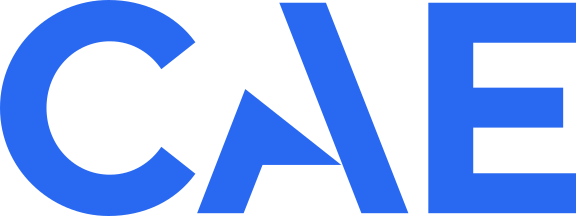

01

Je collabore avec des clients internes, des experts métier, des architectes, des scientifiques des données, des ingénieurs de données et des ingénieurs logiciels sur des systèmes d’IA et d’apprentissage automatique pour des environnements opérationnels complexes. Le travail couvre la compréhension du flux de travail, la conception, la mise en œuvre, l’évaluation, le déploiement, l’intégration d’entreprise et l’itération avec les utilisateurs.
Les travaux récents portent sur des systèmes agentiques d’entreprise ancrés dans des données propriétaires et des connaissances métier, y compris la recherche d’information, l’usage d’outils, l’évaluation, la revue humaine, le déploiement infonuagique et l’intégration aux systèmes existants. Les travaux antérieurs chez CAE ont inclus l’apprentissage automatique en production, la prévision, l’adaptation de domaine, les flux documentaires et les modèles de langue, ainsi que des systèmes prédictifs.